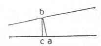

Kant: AA XIV, Mathematik , Seite 033 |
|||||||
Zeile:
|
Text:
|
|
|
||||
| 01 | Linien auf der Seite der Divergentz. Ist das Fällen zug auf einer Zugleich | ||||||
| 02 | ein Errichten des Perpendikels auf der andern Linie, so convergiren | ||||||
| 03 | und divergiren sie nicht. | ||||||
| 04 | S. II: | ||||||
| 05 | Alle Entfernung muß reciproqve seyn; wenn also ab die Entfernung | ||||||
| 06 | des Puncts a von der oberen Linie und zugleich vom |  |
|||||
| 07 | Punct b ist, die Entfernung des Puncts b aber von der | ||||||
| 08 | Unteren Linie, also bc, nicht die Entfernung vom Punct a | ||||||
| 09 | ist, so ist ab die Entfernung des a von b, aber nicht die Entfernung des b | ||||||
| 10 | von a. | ||||||
| 11 | Die Entfernung einer Linie von der Anderen ist die Entfernung aller | ||||||
| 12 | Puncte der einen Linie von der anderen Linie. Also müßen sie alle einerley | ||||||
| 13 | Entfernung haben, d. i. parallel seyn, sonst kann ich gar nicht von der | ||||||
| 14 | Entfernung, sondern Neigung oder Lage einer gegen die andere in einer | ||||||
| 15 | Ebene reden. | ||||||
8. χ—ψ. L Bl. A 5. R I 67/8. S. I: |
|||||||
| 16 | Wir haben zwar eine Definition | ||||||
| 17 | von parallellinien, d. i. solchen (g geraden Linien ), deren Weite | ||||||
| 18 | von einander durchgehende gleich ist, aber keine von der Weite einer (g geraden ) | ||||||
| 19 | Linie von der einer andern überhaupt in derselben Ebene. | ||||||
| 20 | Daß nun der erste Satz des Euclids bündig schlißen konte, der | ||||||
| 21 | umgekehrte aber nicht folgen wollte, kam daher. | ||||||
| [ Seite 032 ] [ Seite 034 ] [ Inhaltsverzeichnis ] |
|||||||
;){kind=link}